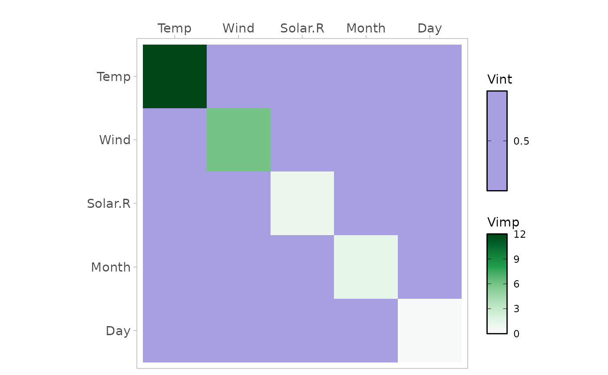
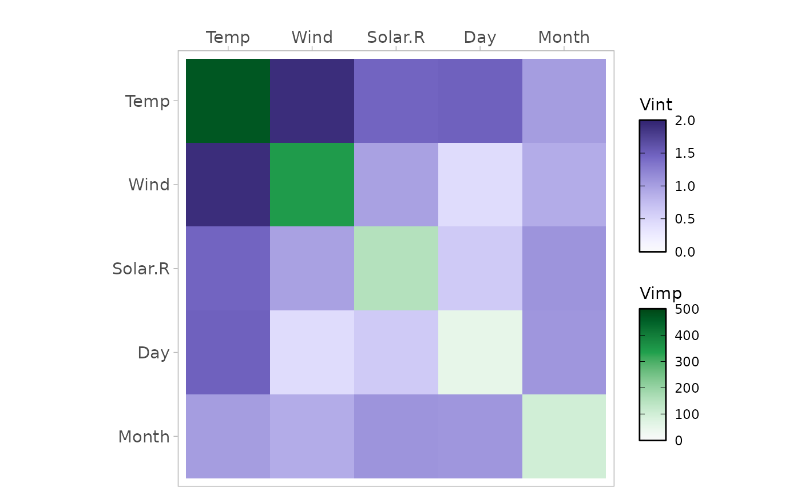

vivi.RdCreates a matrix displaying variable importance on the diagonal and variable interaction on the off-diagonal.
vivi(
data,
fit,
response,
gridSize = 50,
importanceType = "agnostic",
nmax = 500,
reorder = TRUE,
class = 1,
predictFun = NULL,
normalized = FALSE,
numPerm = 4,
showVimpError = FALSE,
vars = NULL
)Data frame used for fit.
A supervised machine learning model, which understands condvis2::CVpredict
The name of the response for the fit.
The size of the grid for evaluating the predictions.
Used to select the importance metric. By default, an agnostic importance measure is used. If an embedded metric is available, then setting this argument to the importance metric will use the selected importance values in the vivid-matrix. Please refer to the examples given for illustration. Alternatively, set to equal "agnostic" (the default) to override embedded importance measures and return agnostic importance values.
Maximum number of data rows to consider. Default is 500. Use all rows if NULL.
If TRUE (default) uses DendSer to reorder the matrix of interactions and variable importances.
Category for classification, a factor level, or a number indicating which factor level.
Function of (fit, data) to extract numeric predictions from fit. Uses condvis2::CVpredict by default, which works for many fit classes.
Should Friedman's H-statistic be normalized or not. Default is FALSE.
Number of permutations to perform for agnostic importance. Default is 4.
Logical. If TRUE, and numPerm > 1 then a tibble containing the variable names, their importance values,
and the standard error for each importance is printed to the console.
A vector of variable names to be assessed.
A matrix of interaction values, with importance on the diagonal.
If the argument importanceType = 'agnostic', then an agnostic permutation importance (1) is calculated.
Friedman's H statistic (2) is used for measuring the interactions. This measure is based on partial dependence curves
and relates the interaction strength of a pair of variables to the total effect strength of that variable pair.
1: Fisher A., Rudin C., Dominici F. (2018). All Models are Wrong but many are Useful: Variable Importance for Black-Box, Proprietary, or Misspecified Prediction Models, using Model Class Reliance. Arxiv.
2: Friedman, J. H. and Popescu, B. E. (2008). “Predictive learning via rule ensembles.” The Annals of Applied Statistics. JSTOR, 916–54.
aq <- na.omit(airquality)
f <- lm(Ozone ~ ., data = aq)
m <- vivi(fit = f, data = aq, response = "Ozone") # as expected all interactions are zero
#> Agnostic variable importance method used.
#> Calculating interactions...
viviHeatmap(m)

# Select importance metric
library(randomForest)
#> randomForest 4.7-1.1
#> Type rfNews() to see new features/changes/bug fixes.
#>
#> Attaching package: ‘randomForest’
#> The following object is masked from ‘package:ranger’:
#>
#> importance
rf1 <- randomForest(Ozone~., data = aq, importance = TRUE)
m2 <- vivi(fit = rf1, data = aq, response = 'Ozone',
importanceType = '%IncMSE') # select %IncMSE as the importance measure
#> %IncMSE importance selected.
#> Calculating interactions...
viviHeatmap(m2)

# \donttest{
library(ranger)
rf <- ranger(Species ~ ., data = iris, importance = "impurity", probability = TRUE)
vivi(fit = rf, data = iris, response = "Species") # returns agnostic importance
#> Agnostic variable importance method used.
#> Calculating interactions...
#> Petal.Width Petal.Length Sepal.Length Sepal.Width
#> Petal.Width 0.3033834 6.9383895 6.98670954 4.43540679
#> Petal.Length 6.9383895 0.3319385 7.05215391 4.44279137
#> Sepal.Length 6.9867095 7.0521539 0.02111516 3.60983578
#> Sepal.Width 4.4354068 4.4427914 3.60983578 0.01200073
#> attr(,"class")
#> [1] "vivid" "matrix" "array"
vivi(fit = rf, data = iris, response = "Species",
importanceType = "impurity") # returns selected 'impurity' importance.
#> Embedded impurity variable importance method used.
#> Calculating interactions...
#> Petal.Width Petal.Length Sepal.Length Sepal.Width
#> Petal.Width 42.786822 7.145377 7.206707 4.463222
#> Petal.Length 7.145377 43.144629 7.269573 4.469643
#> Sepal.Length 7.206707 7.269573 8.637146 3.662476
#> Sepal.Width 4.463222 4.469643 3.662476 1.169145
#> attr(,"class")
#> [1] "vivid" "matrix" "array"
# }